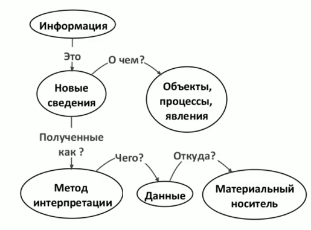
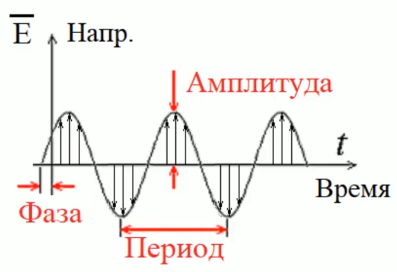
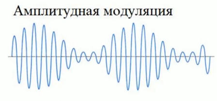
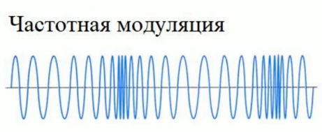
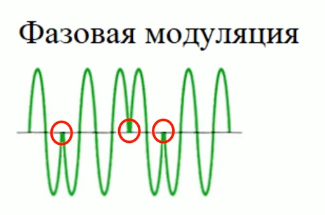
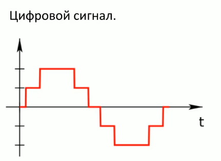
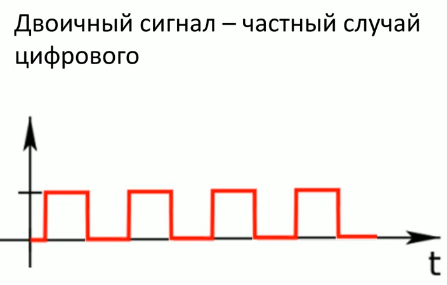
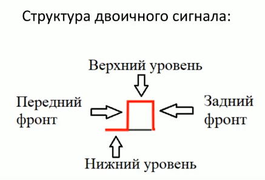
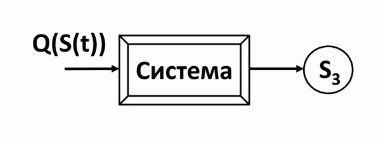

Тема 1. Информация и информатика
Информация
Информация - от латинского слова "infōrmātiō".
forma - фиксация идеи на материальном носителе в виде чертежей или
форм для отливки изделий. In forma tio подразумевало идею, существующую в
голове человека или произносимую с помощью слов.
С развитием всех возможных наук оказалось, что, так или иначе, все
они имеют дело с информацией. Попытки дать единое определение информации
для всех сфер деятельности человека пока не увенчались успехом, т.к.
оказалось, что в каждой сфере используется своя терминология, даже
иногда вкладывается разный смысл в одни и те же термины. Поэтому
согласовать разные определения информации и выработать единое и при том
практически полезное определение оказалось крайне затруднительно. В
связи с этим корректно говорить, что в настоящее время существует
множество понятий об информации, подходящих для использования в
конкретных сферах деятельности человека.
1. Рональд Фишер
в 1921 г.:"Информация - набор статистических данных"
2. Ральф Хартли
в 1928 г.:
"Информация - математическая переменная, принимающая одно из значений с одинаковой вероятностью"
3. Клод Шеннон

в 1948 г.:
"Информация - сигналы, полезные для получателя, в результате получения которых уменьшается неопределенность знаний"
4. Норберт Винер
в 1948 г.:
"Информация - это знания, которые используются для управления системой"
"Информация - это информация, а не материя или энергия"
5. Виктор Михаилович Глушков
"Информация - это совокупность сведений, которые циркулируют в природе, обществе и технических системах"
6. Андрей Николаевич Колмогоров
 "Информация - это характеристика не самого сообщения, а результат взаимодействия между сообщением и потребителем"
"Информация - это характеристика не самого сообщения, а результат взаимодействия между сообщением и потребителем"
Федеральный Закон от 27.07.2006 № 149-ФЗ "Об информации, информационных технологиях и защите информации"
"Информация - сведения (сообщения, данные) независимо от формы их представления"
ISO/IEC 2382:2015 Information technology - Vocabulary
Информация - это знания относительно фактов,
событий, вещей, идей и понятий, которые в определенном контексте имеют
конкретный смысл.
Антропоцентризм - информация
возникает только в момент осознания человеком фактов из
окружающей действительности. Не учитывают информационные процессы,
протекающие без участия человека (Например: обмен генетической
информацией в живой природе)
Техноцентризм
- отождествление информации с данными, которые обрабатываются
компьютером. Проблема: одни и те же данные могут являться источниками
разных знаний.
Философский взгляд, например недетерминированный подход
- отказ от попыток дать определение информации и она рассматривается
как фундаментальная категория на равне с материей и энергией.
1. С учетом смысловой составляющей
1.1. С учетом новизны сведений
1.2. Без учета новизны сведений (№149-ФЗ)
2. Без учета смысловой составляющей








Пример: 1234567 - что это?
1) 1234567 - это начало числового ряда? 1 2 3 4 5 6 7 8 9 10 11 ...
2) 1234567 - это номер телефона? 123 45 67
3) 1234567 - это слово искусственного языка?
| 1 |
2 |
3 |
4 |
5 |
6 |
7 |
| С |
Е |
Г |
О |
Д |
Н |
Я |
- Из одних и тех же данных можно извлечь разные сведения при помощи разных методов интерпретации.
- Если неизвестен метод, при помощи которого источник сведений записал данные, то невозможно применить адекватный метод интерпретации, чтобы извлечь эти сведения из данных и получить информацию.
Метод интерпретации - это алгоритм получения информации из данных.
Свойства информации

Информатика
Информатика (обобщенно)
- междисциплинарное научное направление, изучающее вопросы
производства, хранения, накопления, передачи, обработки и использования
информациии.
В мире существует 2 группы взглядов на содержание информатики.
Первая группа взглядов (первая концепция): Информ[ация + Автом]атика = Информатика.
Сторонники этой концепции настаивают на главенствующей роли ЭВМ в
становлении информатики и на том, что общее определение следует
дополнить: "... при помощи вычислительной техники".
Вторая группа взглядов (вторая концепция) исходит из того, что первая концепция слишком узка.
Информатика - это методология работы с информацией, определяющая информационную культуру личности человека.
Видеоматериал по лекции. Автор и лектор Старший преподаватель кафедры ОИ Смирнов Сергей Сергеевич.